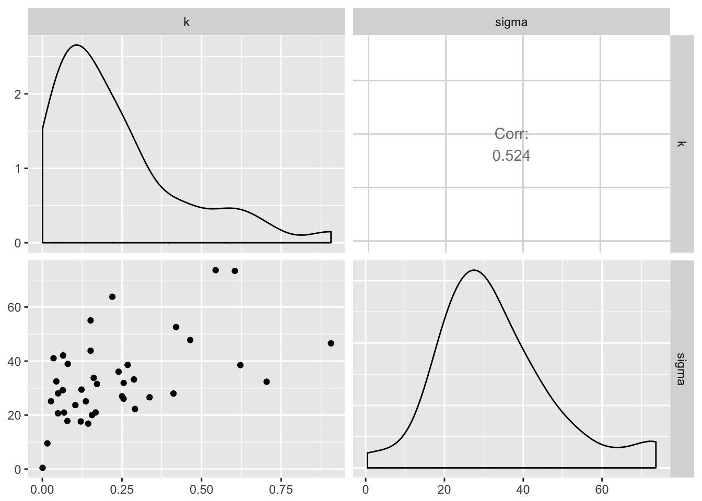
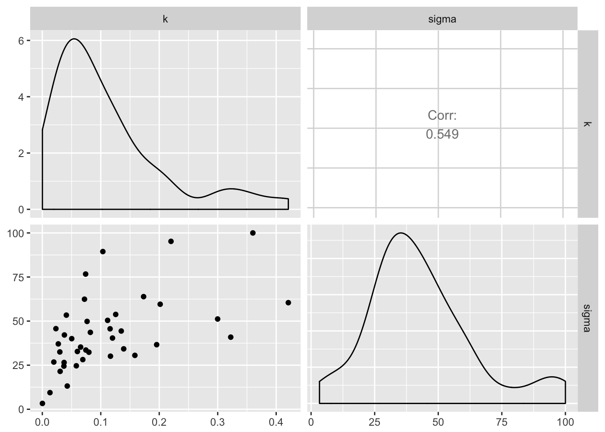
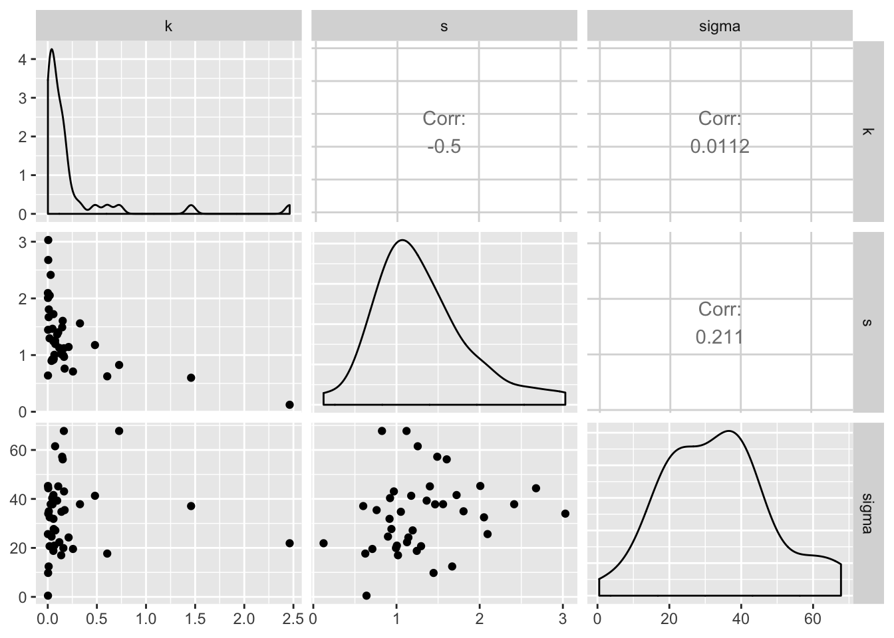
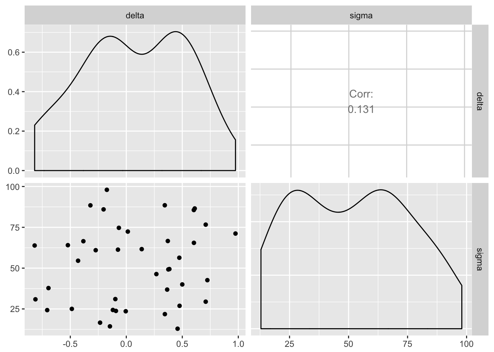
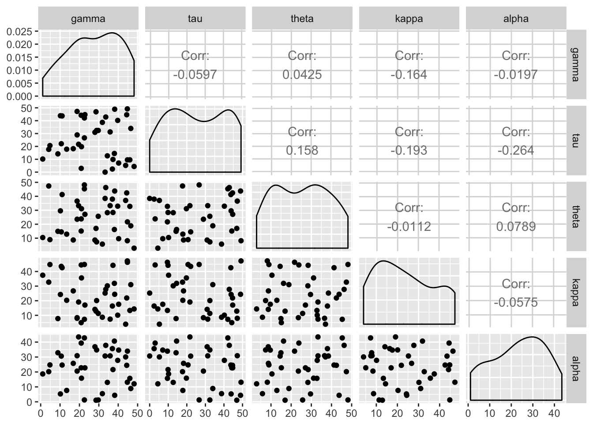
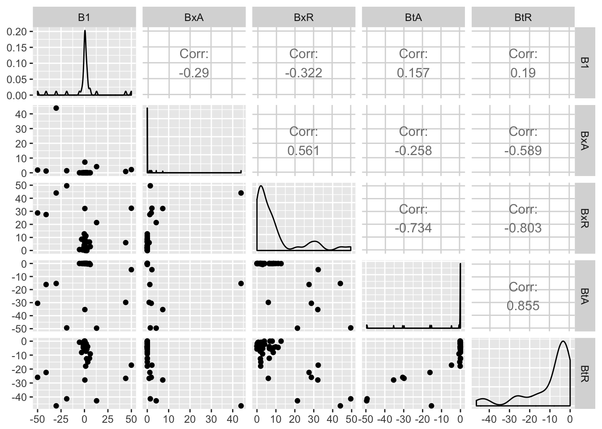

Last updated: 2018-07-17
workflowr checks: (Click a bullet for more information) ✔ R Markdown file: up-to-date
Great! Since the R Markdown file has been committed to the Git repository, you know the exact version of the code that produced these results.
✔ Environment: empty
Great job! The global environment was empty. Objects defined in the global environment can affect the analysis in your R Markdown file in unknown ways. For reproduciblity it’s best to always run the code in an empty environment.
✔ Seed:
set.seed(20180716)
The command set.seed(20180716) was run prior to running the code in the R Markdown file. Setting a seed ensures that any results that rely on randomness, e.g. subsampling or permutations, are reproducible.
✔ Session information: recorded
Great job! Recording the operating system, R version, and package versions is critical for reproducibility.
✔ Repository version: b9f3ff8
wflow_publish or wflow_git_commit). workflowr only checks the R Markdown file, but you know if there are other scripts or data files that it depends on. Below is the status of the Git repository when the results were generated:
Ignored files:
Ignored: .DS_Store
Ignored: .Rproj.user/
Ignored: analysis/.DS_Store
Ignored: analysis/ML/.Rproj.user/
| File | Version | Author | Date | Message |
|---|---|---|---|---|
| Rmd | b9f3ff8 | ballardtj | 2018-07-17 | wflow_publish("analysis/*Rmd") |
| html | 040d8ec | ballardtj | 2018-07-17 | Build site. |
| html | 854f020 | ballardtj | 2018-07-17 | Build site. |
| Rmd | 37ca37b | ballardtj | 2018-07-17 | wflow_publish("analysis/*.Rmd") |
| html | 5ea1d8d | ballardtj | 2018-07-17 | Build site. |
| html | 4408f64 | ballardtj | 2018-07-17 | Build site. |
| Rmd | 994bcaf | ballardtj | 2018-07-17 | wflow_publish("analysis/*.Rmd") |
| html | a0befb1 | ballardtj | 2018-07-16 | final mods from meeting |
| html | 7cd563f | ballardtj | 2018-07-16 | slight tweaks to bounds |
| Rmd | afabbcc | ballardtj | 2018-07-16 | test |
| html | afabbcc | ballardtj | 2018-07-16 | test |
| html | e599bdc | ballardtj | 2018-07-16 | manual commit in console |
| Rmd | 8c02305 | ballardtj | 2018-07-16 | get md working |
| html | 8c02305 | ballardtj | 2018-07-16 | get md working |
#load ggpairs
library(GGally)
#load data
load("data/derived/fit_ML_hyperbolic.RData")
ggpairs(dat_tmp[dat_tmp$trial==1,names(dat_tmp) %in% c("k","sigma")])
#load ggpairs
library(GGally)
#load data
load("data/derived/fit_ML_exponential.RData")
ggpairs(dat_tmp[dat_tmp$trial==1,names(dat_tmp) %in% c("k","sigma")])
#load ggpairs
library(GGally)
#load data
load("data/derived/fit_ML_hyperbolic_gm.RData")
ggpairs(dat_tmp[dat_tmp$trial==1,names(dat_tmp) %in% c("k","s","sigma")])
#load ggpairs
library(GGally)
#load data
load("data/derived/fit_ML_prop_diff.RData")
ggpairs(dat_tmp[dat_tmp$trial==1,names(dat_tmp) %in% c("delta","sigma")])
#load ggpairs
library(GGally)
#load data
load("data/derived/fit_ML_tradeoff.RData")
ggpairs(dat_tmp[dat_tmp$trial==1,names(dat_tmp) %in% c("gamma","tau","theta","kappa","alpha","sigma")])
#load ggpairs
library(GGally)
#load data
load("data/derived/fit_ML_ITCH.RData")
ggpairs(dat_tmp[dat_tmp$trial==1,names(dat_tmp) %in% c("B1","BxA","BxR","BtA","BtR")])
| Version | Author | Date |
|---|---|---|
| 7cd563f | ballardtj | 2018-07-16 |
| 8c02305 | ballardtj | 2018-07-16 |
sessionInfo()R version 3.4.3 (2017-11-30)
Platform: x86_64-apple-darwin15.6.0 (64-bit)
Running under: OS X El Capitan 10.11.6
Matrix products: default
BLAS: /Library/Frameworks/R.framework/Versions/3.4/Resources/lib/libRblas.0.dylib
LAPACK: /Library/Frameworks/R.framework/Versions/3.4/Resources/lib/libRlapack.dylib
locale:
[1] en_AU.UTF-8/en_AU.UTF-8/en_AU.UTF-8/C/en_AU.UTF-8/en_AU.UTF-8
attached base packages:
[1] stats graphics grDevices utils datasets methods base
other attached packages:
[1] GGally_1.3.2
loaded via a namespace (and not attached):
[1] Rcpp_0.12.17 knitr_1.20 whisker_0.3-2
[4] magrittr_1.5 workflowr_1.1.1 munsell_0.5.0
[7] colorspace_1.3-2 rlang_0.2.1 plyr_1.8.4
[10] stringr_1.3.1 tools_3.4.3 grid_3.4.3
[13] gtable_0.2.0 R.oo_1.22.0 git2r_0.22.1
[16] htmltools_0.3.6 lazyeval_0.2.1 yaml_2.1.14
[19] rprojroot_1.3-2 digest_0.6.15 tibble_1.4.2
[22] reshape2_1.4.3 RColorBrewer_1.1-2 ggplot2_2.2.1.9000
[25] R.utils_2.6.0 evaluate_0.10.1 rmarkdown_1.8
[28] labeling_0.3 stringi_1.2.3 pillar_1.2.3
[31] compiler_3.4.3 scales_0.5.0.9000 backports_1.0.5
[34] R.methodsS3_1.7.1 reshape_0.8.7 This reproducible R Markdown analysis was created with workflowr 1.1.1